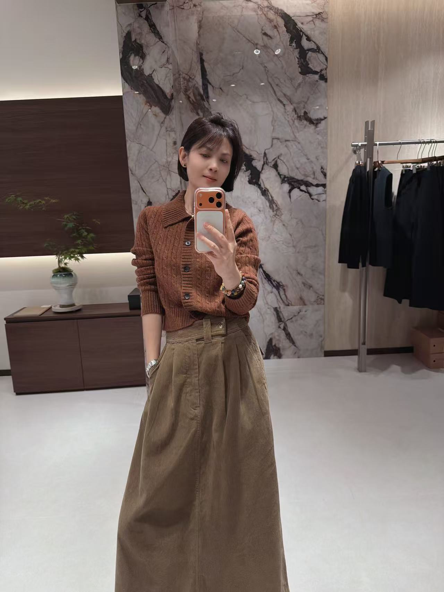

LOOK 01 / SOFT CONTRAST
留一点温柔给日常
米白与深棕，让简洁也有层次。
THE EVERYDAY EDIT 希美衣橱
日常，自有风格。
温柔的色彩，舒展的轮廓。
在熟悉的日常里，找到恰好适合自己的那一件。

01 / THE COLLECTION
从一件针织开始，
让舒适与风格自然相遇。
实物色彩可能因光线与屏幕略有差异，具体信息以店内实物为准。
02 / STYLE JOURNAL
同一种从容，
不同的色彩与心情。
米白与深棕，让简洁也有层次。
苔绿与橄榄棕，沉静而有生机。
一件浅色外套，接住日常的轻盈。
03 / OUR BOUTIQUE
A space to feel at ease.
木色、暖光，与一件件认真挑选的衣服。
我们希望这里是一个能让你放慢脚步的地方。
看看颜色，摸摸纹理，试试不同的搭配。
合适的衣服，值得你亲自感受。
04 / THE XM STORY
希美 · XM，关注服装，也关注穿着它的你。
从好搭配的色彩到自在的轮廓，
我们想把那些可以反复穿、慢慢喜欢的衣服，带进你的日常。